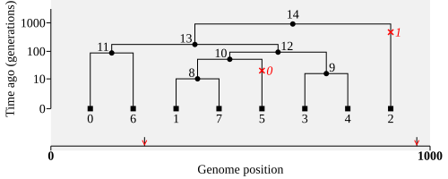
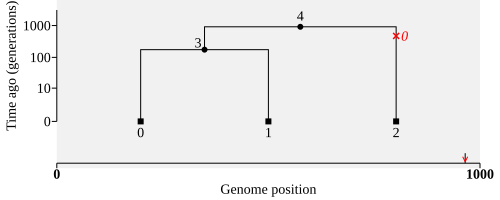
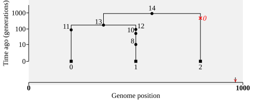

Simplification#
The simplify() method provides one of the most powerful ways to modify a
tskit TreeSequence.
At a high level, simplification works as follows: it starts from a chosen set of focal nodes and then traces their ancestry back through the tree sequence. Any nodes, edges, and mutations (as well as individuals, populations, and sites) that are not needed to represent that ancestry are discarded, and the remaining information is compacted into a new, equivalent tree sequence. During this process, IDs of nodes and other objects may change. In particular, non-coalescent nodes are usually removed, unless you ask to keep them.
Simplification is commonly used:
In forward simulations, to remove lineages that have gone extinct
To create a smaller tree sequence focussed on a subset of samples
To remove redundant nodes and other tskit objects (e.g. unreferenced populations)
Other less common uses, such as retaining all ancestral individuals, retaining unary regions of coalescent nodes, and simplifying without touching the node table, are described in the Advanced simplification tutorial.
A single tree example#
We start with a very small example for ease of visualisation. This is a tree sequence consisting of a single tree with 8 haploid genomes (4 diploid individuals) and 2 variable sites.
import tskit
ts = tskit.load("data/simplification_basic.trees")
plot_params = {"size": (500, 200), "time_scale": "log_time", "y_axis":True, "y_ticks": [0, 10, 100, 1000]}
ts.draw_svg(**plot_params)

Suppose we only want to retain the ancestry of sample nodes 0, 1, and 2. We can do this
by passing those IDs as the new samples to the simplify() method:
focal_node_ids = [0, 1, 2]
ts_simp1 = ts.simplify(samples=focal_node_ids)
ts_simp1.draw_svg(**plot_params)

Restricting the sample nodes to [0, 1, 2] makes the ancestry much simpler. Note that one of the mutations is not relevant to the new samples, so it has been filtered out, causing the ID of the remaining mutation to change from 1 to 0. Similarly, many nodes have been filtered out, resulting in changed node IDs (e.g. the root node at time 1000 is the same in both trees, but its ID has changed from 14 to 4).
To keep node IDs the same, you can specify filter_nodes=False. Although this makes
the result easier to compare with the original, it is not generally recommended, as it
leaves redundant nodes cluttering up the tree sequence.
ts_simp2 = ts.simplify(focal_node_ids, filter_nodes=False, filter_sites=False)
# Node IDs should now remain unchanged
ts_simp2.draw_svg(**plot_params)
Note that the example above also used another filter_ argument, setting
filter_sites=False, so that the first site, which has no mutations after
simplification, is also retained (it is shown as a bare tick mark on the X axis,
around position 250). However, mutations above unused nodes are still deleted,
so mutation IDs are not guaranteed to stay the same.
To further reduce the size of the simplified tree sequence, simplification normally
removes nodes from the ancestry that no longer represent branch points (coalescences).
We can leave those in using keep_unary=True.
ts_simp3 = ts.simplify(focal_node_ids, filter_nodes=False, keep_unary=True)
ts_simp3.draw_svg(**plot_params)

Note
As modifying a tree sequence can change the IDs of nodes, sites, and other objects, it
can be useful to use metadata: information that stays
associated with tskit objects even when their IDs change. When simplifying, it is
also possible to keep track of node ID changes by using the map_nodes parameter,
see the advanced simplification tutorial.
A larger simplification example#
Here we examine the impact of simplification on the efficiency of tree sequence storage and processing. We’ll start with a larger backward simulation that has a handful of admixed individuals:
demography = msprime.Demography()
demography.add_population(name="SMALL", initial_size=1000)
demography.add_population(name="BIG", initial_size=4000)
demography.add_population(name="ADMIX", initial_size=500)
demography.add_population(name="ANC", initial_size=1500)
demography.add_admixture(
time=100, derived="ADMIX", ancestral=["SMALL", "BIG"], proportions=[0.5, 0.5]
)
demography.add_population_split(time=1_000, derived=["SMALL", "BIG"], ancestral="ANC")
big_ts = msprime.sim_ancestry(
samples={"SMALL": 400, "BIG": 400, "ADMIX": 6, "ANC": 400},
demography=demography,
sequence_length=5e7,
recombination_rate=2e-8,
random_seed=2432,
)
big_ts = msprime.sim_mutations(big_ts, rate=1e-8, random_seed=6151)
print(
f"`big_ts` represents a simulation with admixture of {big_ts.num_samples} samples",
f"over {big_ts.sequence_length/1e6:g} Mb ({big_ts.num_trees} trees)",
)
`big_ts` represents a simulation with admixture of 2412 samples over 50 Mb (125118 trees)
Use case 1: remove historical samples#
Here, about a third of the sample nodes (those from the ANC population) exist
at times prior to the current generation, i.e. they are historical sample nodes.
In fact, in forward simulations most nodes will be of this sort, left over from
previously simulated generations. These are often unwanted, and one of the main
use cases for simplification is to reduce the ancestry to that of just the
contemporary genomes: i.e. removing any edges, nodes, and mutations that track
“extinct” lineages.
modern_sample_ids = big_ts.samples(time=0)
ts_modern = big_ts.simplify(modern_sample_ids)
print(f"Tree sequence simplified to {ts_modern.nbytes/big_ts.nbytes:.1%} of original size")
Tree sequence simplified to 81.6% of original size
Simplifying has only produced a modest reduction in size, but you can imagine that
in a forward simulation, where the majority of genomes are historical, repeated
simplification can result in huge savings. In practice, simulators usually do this
regular simplification of the tables used to store the paths of genetic inheritance
automatically, so using
simplify() in this way is mainly of interest if you are
building your own forward simulator.
Use case 2: simplify to a subset of samples#
Often you might want to focus on only one group of samples, for example the small
group of ADMIX individuals (population ID 2 in this simulation):
admix_pop_id = 2
assert big_ts.population(admix_pop_id).metadata["name"] == "ADMIX"
admix_sample_ids = big_ts.samples(population=admix_pop_id)
ts_admix, node_map = big_ts.simplify(admix_sample_ids, map_nodes=True)
print(f"Tree sequence simplified to {ts_admix.nbytes/big_ts.nbytes:.2%} of original size")
print()
print(f"Previous admixed sample IDs were {admix_sample_ids}")
print(f"Simplifying has changed these to {node_map[admix_sample_ids]}")
# Check that these are indeed the only sample IDs
assert set(node_map[admix_sample_ids]) == set(ts_admix.samples())
Tree sequence simplified to 10.86% of original size
Previous admixed sample IDs were [1600 1601 1602 1603 1604 1605 1606 1607 1608 1609 1610 1611]
Simplifying has changed these to [ 0 1 2 3 4 5 6 7 8 9 10 11]
Note
The map_nodes=True argument means that simplify() returns both a new
tree sequence and an array mapping each old node ID to its new ID, or to
tskit.NULL if that node is removed.
Here you can see that (unlike in previous examples) the sample node IDs
have changed: unless filter_nodes=False, the N node IDs provided as the samples
argument will be allocated new IDs from 0 to N - 1 in the returned tree sequence (so simplify can be used to reorder sample IDs, although
subset() is a way to do this with fewer side effects).
Efficiency#
Edges take up the majority of the space in most tree sequences. In this case you can
see that although simplify has reduced the sample nodes to 12 genomes from
the 6 diploid ADMIX individuals (a reduction of 99.5%), the number of edges
has not been reduced by such a large amount.
That’s because many of the ancestors of the SMALL and BIG populations are also shared
by ADMIX. It also shows why tree sequence structures are so effective for encoding
and analysing large datasets: storage and processing efficiency, in particular the
number of edges, is sub-linear in the number of samples.
print(
f"The simplified tree sequence has only {ts_admix.num_samples / big_ts.num_samples:.2%} of the samples,",
f"but retains {ts_admix.num_edges / big_ts.num_edges:.2%} of the edges."
)
The simplified tree sequence has only 0.50% of the samples, but retains 9.72% of the edges.
If you want to analyse only the admixed individuals, using the simplified tree sequence
is much more efficient than running equivalent operations on the original big_ts:
%%timeit
# Speed test for decoding all the genetic variants of the admixed individuals
for v in ts_admix.variants():
pass
9.34 ms ± 42.1 μs per loop (mean ± std. dev. of 7 runs, 100 loops each)
Identical results can be obtained using the full tree sequence and restricting calculations to the admix_sample_ids, but this approach is much slower:
%%timeit
# Equivalent processing of admixed individuals, using the full tree sequence
for v in big_ts.variants(samples=admix_sample_ids):
pass
224 ms ± 1.4 ms per loop (mean ± std. dev. of 7 runs, 1 loop each)
The same efficiencies apply to calculating statistics on subsets of genomic samples.
As simplification has been highly optimised in tskit, if you perform repeated
processing of the same subset of genomes, it can be worth simplifying before
processing.
Removing other unused objects#
If we print out the original and admix-only (simplified) tree sequence, we can see that a number of other tables have also been reduced in size. For instance, simplification has reduced the number of individuals from 1206 to 6, and the number of sites to less than a sixth of the original.
print("Original tree sequence")
big_ts
Original tree sequence
|
|
|
|---|---|
| Trees | 125 118 |
| Sequence Length | 50 000 000 |
| Time Units | generations |
| Sample Nodes | 2 412 |
| Total Size | 24.8 MiB |
| Metadata | No Metadata |
| Table | Rows | Size | Has Metadata |
|---|---|---|---|
| Edges | 491 725 | 15.0 MiB | |
| Individuals | 1 206 | 33.0 KiB | |
| Migrations | 0 | 8 Bytes | |
| Mutations | 65 284 | 2.3 MiB | |
| Nodes | 78 992 | 2.1 MiB | |
| Populations | 4 | 343 Bytes | ✅ |
| Provenances | 2 | 3.0 KiB | |
| Sites | 65 232 | 1.6 MiB |
| Provenance Timestamp | Software Name | Version | Command | Full record |
|---|---|---|---|---|
| 16 May, 2026 at 06:30:17 PM | msprime | 1.4.0 | sim_mutations |
Detailsdictschema_version: 1.0.0
software:
dictname: msprimeversion: 1.4.0
parameters:
dictcommand: sim_mutations
tree_sequence:
dict__constant__: __current_ts__rate: 1e-08 model: None start_time: None end_time: None discrete_genome: None keep: None random_seed: 6151
environment:
dict
os:
dictsystem: Linuxnode: runnervmrw5os release: 6.17.0-1013-azure version: #13~24.04.1-Ubuntu SMP Wed Apr 15 16:52:17 UTC 2026 machine: x86_64
python:
dictimplementation: CPythonversion: 3.11.15
libraries:
dict
kastore:
dictversion: 2.1.2
tskit:
dictversion: 1.0.3
gsl:
dictversion: 2.6 |
| 16 May, 2026 at 06:30:17 PM | msprime | 1.4.0 | sim_ancestry |
Detailsdictschema_version: 1.0.0
software:
dictname: msprimeversion: 1.4.0
parameters:
dictcommand: sim_ancestry
samples:
dictSMALL: 400BIG: 400 ADMIX: 6 ANC: 400
demography:
dict
populations:
listdictinitial_size: 1000growth_rate: 0 name: SMALL description:
extra_metadata:
dictdefault_sampling_time: None initially_active: None id: 0 __class__: msprime.demography.Population dictinitial_size: 4000growth_rate: 0 name: BIG description:
extra_metadata:
dictdefault_sampling_time: None initially_active: None id: 1 __class__: msprime.demography.Population dictinitial_size: 500growth_rate: 0 name: ADMIX description:
extra_metadata:
dictdefault_sampling_time: None initially_active: None id: 2 __class__: msprime.demography.Population dictinitial_size: 1500growth_rate: 0 name: ANC description:
extra_metadata:
dictdefault_sampling_time: 1000 initially_active: False id: 3 __class__: msprime.demography.Population
events:
listdicttime: 100derived: ADMIX
ancestral:
listSMALLBIG
proportions:
list0.50.5 __class__: msprime.demography.Admixture dicttime: 1000
derived:
listSMALLBIG ancestral: ANC __class__: msprime.demography.PopulationS plit
migration_matrix:
listlist0.00.0 0.0 0.0 list0.00.0 0.0 0.0 list0.00.0 0.0 0.0 list0.00.0 0.0 0.0 __class__: msprime.demography.Demography sequence_length: 50000000.0 discrete_genome: None recombination_rate: 2e-08 gene_conversion_rate: None gene_conversion_tract_length: None population_size: None ploidy: None model: None initial_state: None start_time: None end_time: None record_migrations: None record_full_arg: None additional_nodes: None coalescing_segments_only: None num_labels: None random_seed: 2432 stop_at_local_mrca: None replicate_index: 0
environment:
dict
os:
dictsystem: Linuxnode: runnervmrw5os release: 6.17.0-1013-azure version: #13~24.04.1-Ubuntu SMP Wed Apr 15 16:52:17 UTC 2026 machine: x86_64
python:
dictimplementation: CPythonversion: 3.11.15
libraries:
dict
kastore:
dictversion: 2.1.2
tskit:
dictversion: 1.0.3
gsl:
dictversion: 2.6 |
print("Simplified tree sequence")
ts_admix
Simplified tree sequence
|
|
|
|---|---|
| Trees | 15 153 |
| Sequence Length | 50 000 000 |
| Time Units | generations |
| Sample Nodes | 12 |
| Total Size | 2.7 MiB |
| Metadata | No Metadata |
| Table | Rows | Size | Has Metadata |
|---|---|---|---|
| Edges | 47 794 | 1.5 MiB | |
| Individuals | 6 | 192 Bytes | |
| Migrations | 0 | 8 Bytes | |
| Mutations | 10 131 | 366.1 KiB | |
| Nodes | 9 871 | 269.9 KiB | |
| Populations | 4 | 343 Bytes | ✅ |
| Provenances | 3 | 3.5 KiB | |
| Sites | 10 128 | 247.3 KiB |
| Provenance Timestamp | Software Name | Version | Command | Full record |
|---|---|---|---|---|
| 16 May, 2026 at 06:30:18 PM | tskit | 1.0.3 | simplify |
Detailsdictschema_version: 1.0.0
software:
dictname: tskitversion: 1.0.3
parameters:
dictcommand: simplifyTODO: add simplify parameters
environment:
dict
os:
dictsystem: Linuxnode: runnervmrw5os release: 6.17.0-1013-azure version: #13~24.04.1-Ubuntu SMP Wed Apr 15 16:52:17 UTC 2026 machine: x86_64
python:
dictimplementation: CPythonversion: 3.11.15
libraries:
dict
kastore:
dictversion: 2.1.2 |
| 16 May, 2026 at 06:30:17 PM | msprime | 1.4.0 | sim_mutations |
Detailsdictschema_version: 1.0.0
software:
dictname: msprimeversion: 1.4.0
parameters:
dictcommand: sim_mutations
tree_sequence:
dict__constant__: __current_ts__rate: 1e-08 model: None start_time: None end_time: None discrete_genome: None keep: None random_seed: 6151
environment:
dict
os:
dictsystem: Linuxnode: runnervmrw5os release: 6.17.0-1013-azure version: #13~24.04.1-Ubuntu SMP Wed Apr 15 16:52:17 UTC 2026 machine: x86_64
python:
dictimplementation: CPythonversion: 3.11.15
libraries:
dict
kastore:
dictversion: 2.1.2
tskit:
dictversion: 1.0.3
gsl:
dictversion: 2.6 |
| 16 May, 2026 at 06:30:17 PM | msprime | 1.4.0 | sim_ancestry |
Detailsdictschema_version: 1.0.0
software:
dictname: msprimeversion: 1.4.0
parameters:
dictcommand: sim_ancestry
samples:
dictSMALL: 400BIG: 400 ADMIX: 6 ANC: 400
demography:
dict
populations:
listdictinitial_size: 1000growth_rate: 0 name: SMALL description:
extra_metadata:
dictdefault_sampling_time: None initially_active: None id: 0 __class__: msprime.demography.Population dictinitial_size: 4000growth_rate: 0 name: BIG description:
extra_metadata:
dictdefault_sampling_time: None initially_active: None id: 1 __class__: msprime.demography.Population dictinitial_size: 500growth_rate: 0 name: ADMIX description:
extra_metadata:
dictdefault_sampling_time: None initially_active: None id: 2 __class__: msprime.demography.Population dictinitial_size: 1500growth_rate: 0 name: ANC description:
extra_metadata:
dictdefault_sampling_time: 1000 initially_active: False id: 3 __class__: msprime.demography.Population
events:
listdicttime: 100derived: ADMIX
ancestral:
listSMALLBIG
proportions:
list0.50.5 __class__: msprime.demography.Admixture dicttime: 1000
derived:
listSMALLBIG ancestral: ANC __class__: msprime.demography.PopulationS plit
migration_matrix:
listlist0.00.0 0.0 0.0 list0.00.0 0.0 0.0 list0.00.0 0.0 0.0 list0.00.0 0.0 0.0 __class__: msprime.demography.Demography sequence_length: 50000000.0 discrete_genome: None recombination_rate: 2e-08 gene_conversion_rate: None gene_conversion_tract_length: None population_size: None ploidy: None model: None initial_state: None start_time: None end_time: None record_migrations: None record_full_arg: None additional_nodes: None coalescing_segments_only: None num_labels: None random_seed: 2432 stop_at_local_mrca: None replicate_index: 0
environment:
dict
os:
dictsystem: Linuxnode: runnervmrw5os release: 6.17.0-1013-azure version: #13~24.04.1-Ubuntu SMP Wed Apr 15 16:52:17 UTC 2026 machine: x86_64
python:
dictimplementation: CPythonversion: 3.11.15
libraries:
dict
kastore:
dictversion: 2.1.2
tskit:
dictversion: 1.0.3
gsl:
dictversion: 2.6 |
Note that the call to TreeSequence.simplify() has been recorded in the
Provenance information. Like most tree sequence methods, you can pass
record_provenance=False if you want this to be omitted (which will save space, but not
lead to other efficiency gains).
On closer inspection, you might be surprised to see that there are still 4 populations in
the simplified tree sequence, although it contains only samples from the ADMIX population:
print(
"Sample nodes in `ts_admix` belong to the following populations",
ts_admix.tables.nodes.population[ts_admix.samples()],
)
ts_admix.tables.populations
Sample nodes in `ts_admix` belong to the following populations [2 2 2 2 2 2 2 2 2 2 2 2]
| id | metadata |
|---|---|
| 0 | {'description': '', 'name': 'SMALL'} |
| 1 | {'description': '', 'name': 'BIG'} |
| 2 | {'description': '', 'name': 'ADMIX'} |
| 3 | {'description': '', 'name': 'ANC'} |
The reason that the other populations (BIG, SMALL, and ANC) have been retained is
that the simulation has assigned populations to both sample and nonsample nodes. If we
edit the tree sequence tables such that ancestral
(non-sample) genomes are not associated with defined populations, then simplification will
remove all but the admixed population (and reassign the population IDs as
necessary).
An example of this is given in the code below, which performs a further round of simplification,
taking advantage of the fact that if a list of focal nodes is not given, simplify
uses the existing sample nodes.
import numpy as np
import tskit
tables = ts_admix.dump_tables()
samples = ts_admix.samples()
# Make an array of NULL population values for each node
nodes_population = np.full_like(tables.nodes.population, tskit.NULL)
# Set the sample node populations back to their expected population
nodes_population[samples] = ts_admix.nodes_population[samples]
tables.nodes.population = nodes_population
tables.simplify() # This is the tables version of simplify, often used in forward sims
ts_admix_only = tables.tree_sequence()
print(
"Sample nodes in `ts_admix_only` belong to the following populations",
ts_admix_only.tables.nodes.population[ts_admix_only.samples()],
)
ts_admix_only.tables.populations
Sample nodes in `ts_admix_only` belong to the following populations [0 0 0 0 0 0 0 0 0 0 0 0]
| id | metadata |
|---|---|
| 0 | {'description': '', 'name': 'ADMIX'} |
Although reducing the number of populations saves space, it requires care.
For instance admix_pop_id can no longer be used to refer to the correct ID
in the ts_admix_only tree sequence.
Extra uses for simplification#
Simplify is somewhat of a “Swiss Army knife” for tree sequences, and can be used in several other ways. See the Advanced simplification tutorial for more details.